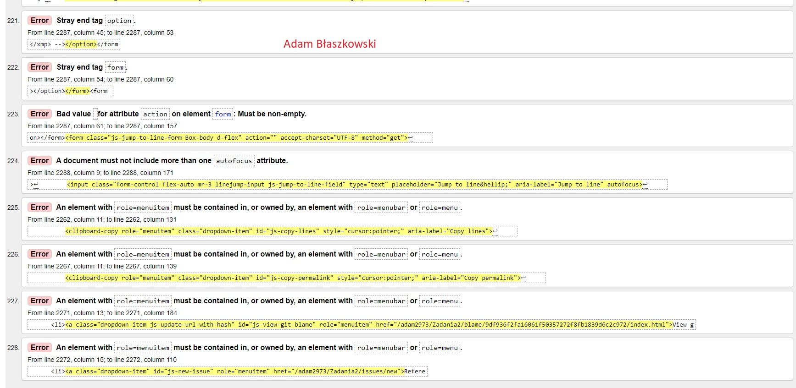

Walidacja jest pierwszym krokiem w ocenie dostępności stron internetowych. Jeśli Twoja witryna nie opiera się na standardach W3C, możesz uniemożliwić dostęp do zawartości strony internetowej użytkownikom technologii wspomagających, takich jak czytniki ekranu, linijki brajlowskie czy przełączniki
wróć